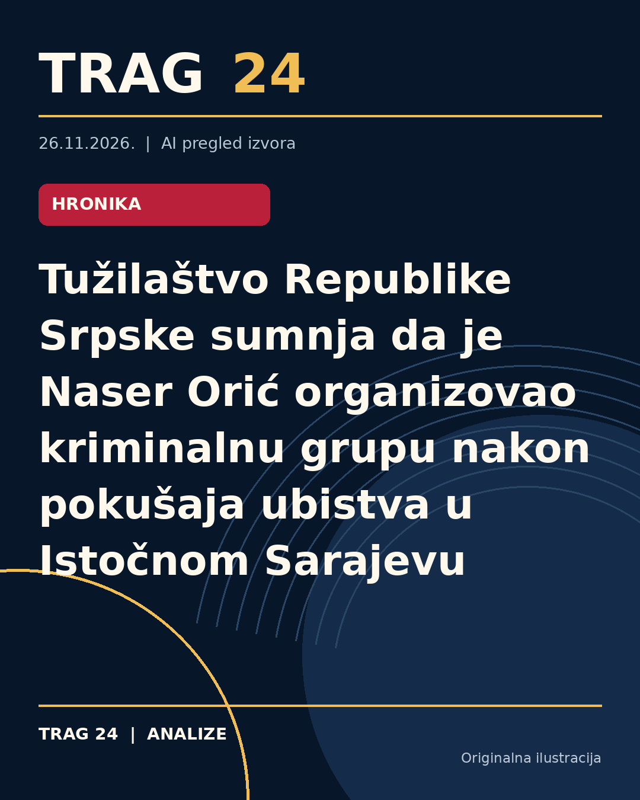

Tužilaštvo Republike Srpske sumnja da je Naser Orić organizovao kriminalnu grupu nakon pokušaja ubistva u Istočnom Sarajevu

ŠTA SE DOGODILO
Republičko javno tužilaštvo Republike Srpske (RS) saopštilo je da postoji sumnja da je Naser Orić, nakon pokušaja teškog ubistva Koste Pandurevića u Istočnom Sarajevu, organizovao kriminalnu grupu. Ova grupa, kako se navodi, imala je jasno podeljene uloge i cilj da pomogne u bekstvu osumnjičenima Đorđu Ždralu i Daliboru Bartuli te da spreči dokazivanje krivičnog dela, uključujući i davanje lažnih iskaza.
HRONOLOGIJA
Prema informacijama tužilaštva, događaji su povezani sa pokušajem teškog ubistva dogodljenog u Istočnom Sarajevu. U okviru akcije pod nazivom "Emisar", uhapšeno je petoro osumnjičenih, uključujući osobe pod sumnjom za organizaciju grupe. Sudski postupci vezani za određivanje pritvora odvijaju se u Okružnom sudu u Banjaluci, uz prisustvo pojačanih policijskih snaga i Žandarmerije. Ročištu ne smeju prisustvovati novinari.
ŠTA NAVODE IZVORI
Tužilaštvo Republike Srpske (posebno odeljenje za suzbijanje korupcije i organizovanog kriminala) tvrdi da su dokazi do sada prikupljeni u okviru akcije "Emisar" potvrdili sumnju u organizovanje kriminalne grupe. Osim Nasera Orića, u grupi su prema saopštenju tužilaštva Mustafa i Mesud Mustafić, Nikolina Šljivić i Siniša Derganac. Cilj grupe bio je da omete sudski postupak i pomogne u bekstvu Ždrali i Bartuli.
ŠTA JE POTVRĐENO
Potvrđeno je da je tužilaštvo podnelo zahtev za pritvor za pet uhapšenih osoba zbog opasnosti od bekstva, mogućnosti uništavanja dokaza i ometanja procesa, posebno uticajem na Đorđa Ždralu koji je u bekstvu. Sudski postupak o pritvoru je u toku, uz prisustvo brojnih policijskih snaga.
ŠTA NIJE POTVRĐENO
Nije potvrđeno da je Naser Orić kriv ili osuđen, već se radi o sumnji koju istražuje tužilaštvo. Nema dodatnih dokaza o ishodu sudskog procesa niti o tome da li će pritvor biti određen. Informacije o drugim detaljima događaja ili mogućim motivima nisu iznete.
ŠTA OSTАJE OTVORENO: Ostaje nejasno kako će se predmet dalje razvijati u sudskom postupku, da li će svi uhapšeni biti zadržani u pritvoru i koja će biti njihova dalja sudbina. Takođe nije poznato da li postoje drugi učesnici ili dokazi koji bi mogli proširiti istragu ili potvrditi navode tužilaštva.
Izvori
- https://mondo.rs/Info/EX-YU/a2317348/tuzilastvo-rs-naser-oric-organizovao-kriminalnu-grupu.html
- https://nova.rs/vesti/svet/naser-oric-organizovao-kriminalnu-grupu-za-pomaganje-zdralu/
- https://insajder.net/prenosimo/republicko-javno-tuzilastvo-republike-srpske-naser-oric-organizovao-kriminalnu-grupu-za-pomoc-zdralu-posle-pokusaja-ubistva
Ova analiza je pripremljena uz pomoć veštačke inteligencije na osnovu javno dostupnih izvora. Navodi izvora nisu nužno nezavisno potvrđeni.